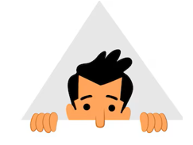
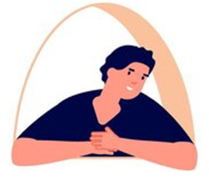

Les presento un equipazo de abejas humanas. Cada mañana comenzamos las clases con dulce voz de nuestra "The Best" profe Rita preguntandonos: ¿Cómo están? ¿Cómo van?
- Parece que a cadauno les va todo muy bien(Digo "parece" porque todos trabajan en silencio como las abejas), menos a mi: reconozco que soy la más quejica del equipazo. Pero me quejo ya que sigo siendo la misma perfeccionista y multitareas que cuando tenía buena salud, y aún no lo accepto.
- El resto sigue trabajando, casí todos en silencio, menos el "Artista"-Alejandro, es como un bebé que recien aprendió a pintar y descubrió los colores y le escuchamos a decir por milesima vez:
- -Una última pregunta Rita... o
- -Una pregunta absurda...
- Luego soy yo(a media mañana con las migrañas calmadas ya): 'mira que me pasa cada cosa...(y cuento mis problemas, los que nunca terminan...)'. Suelo decir:
- -Yo después de horas sufriendo con este deberes estoy estancada otra vez, para variar...
- Y así poco a poco todos preguntando sobre las dudas de las actividades...
- Y la profe Rita nos responde a todos siempre con inmensa paciencia y empatía que le caracteriza y se lo agradecemos infinitamente. ¡Muchas Gracias Profe por su paciencia!
Alberto
"Silencioso"


Alejandro
"Artista"

Any
"Currante"
César
"Ave"

Fernanda
"Alegria"

Fouad
"Luchador"
Juan Pablo
"Genio"

Mario
"Timido"

Susana
"Hormiga"

Tea
"Multitareas"

Yolanda
"La Poderosa"
Profe Rita
"The Best"